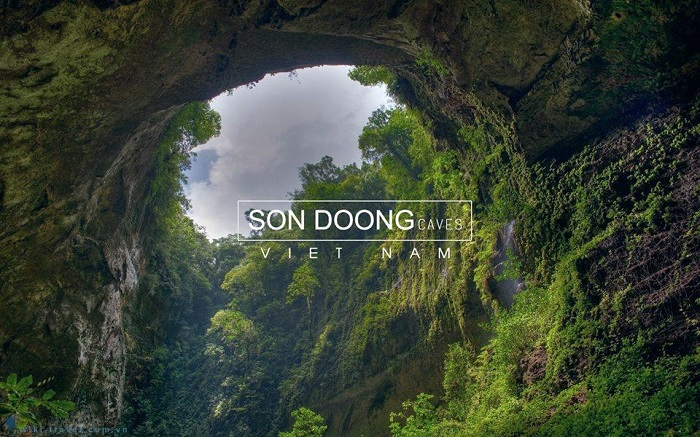
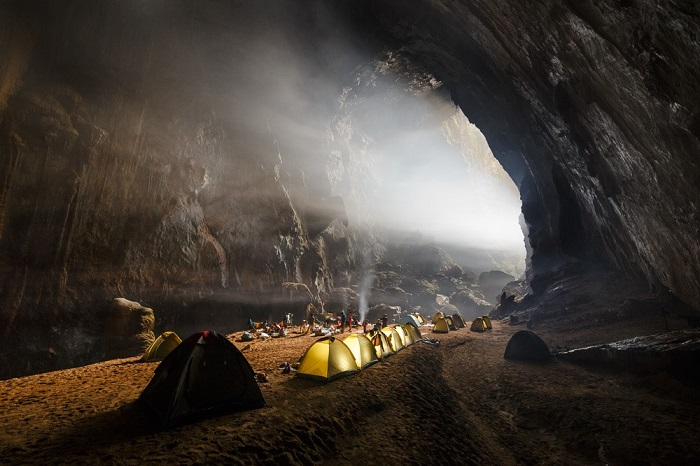
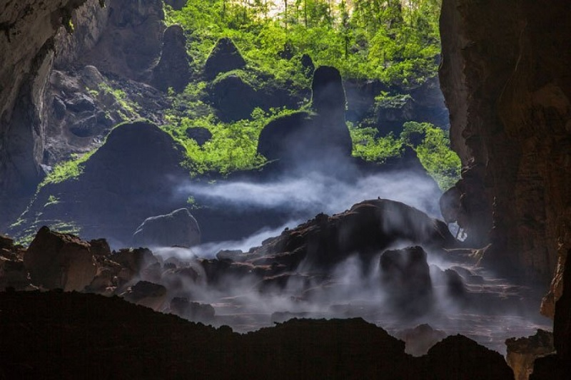
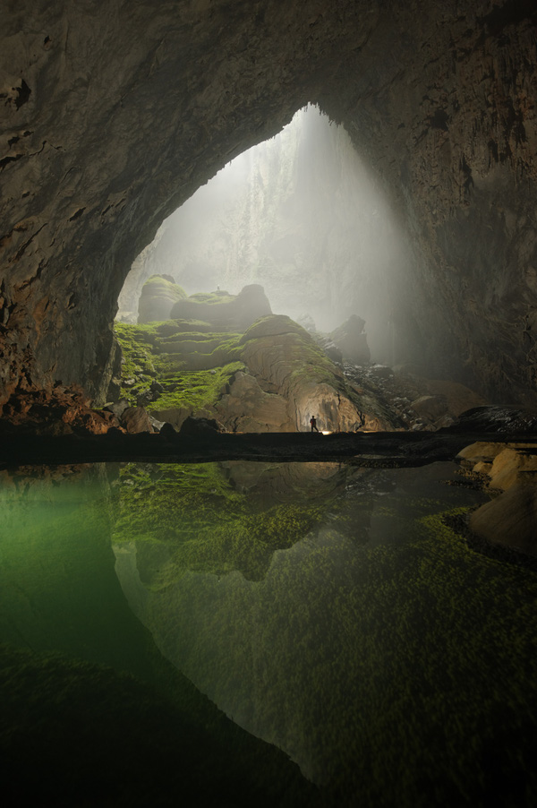

1. Giới thiệu về hang Sơn Đoòng Quảng Bình
1.1. Hang Sơn Đoòng ở đâu?
Hang Sơn Đoòng là một địa điểm du lịch Quảng Bình nổi tiếng, thuộc vườn quốc gia Phong Nha - Kẻ Bàng (xã Sơn Trạch, huyện Bố Trạch, tỉnh Quảng Bình) và cũng là một phần của hệ thống ngầm nối với hơn 150 động khác ở Việt Nam gần biên giới với Lào.
Hang Sơn Đoòng là niềm tự hào của người dân Việt Nam cũng như người dân Quảng Bình khi được thiên nhiên ưu ái ban tặng một kiệt tác vô giá (Ảnh: sưu tầm)
1.2. Ai là người đầu tiên phát hiện ra hang Sơn Đoòng?
Hang Sơn Đoòng được khám phá vào năm 1991 bởi Hồ Khanh - một người dân địa phương khi ông chỉ tình cờ tìm ra khi lánh vào cửa hang để tránh mưa. Rất lâu sau này, cho đến năm 2009 khi đoàn thám hiểm Hiệp hội Hang động Hoàng gia Anh (BCRA) đến nơi này thăm dò thì ông Hồ Khanh mới có cơ hội báo cho họ biết về sự tồn tại của hang động. Phải khó khăn lắm ông và đoàn thám hiểm mới tìm lại được cửa hang vốn nằm sâu trong rừng già với địa hình hiểm trở, xa xôi và đặc biệt là không thể phát hiện thấy trên Google Earth. Dưới sự hướng dẫn của ông, họ đã đi sâu vào hang, đo đạc, chụp ảnh và thu thập dữ kiện khoa học. Hang Sơn Đoòng đã được công nhận là di sản của thế giới với các đặc điểm vượt trội: Hang động tự nhiên có kích thước lớn nhất, môi trường bên trong cực độc đáo với thảm rừng nguyên sinh, sông ngầm và sở hữu điều kiện thời tiết riêng.
Khám phá hang động lớn nhất thế giới khi du lịch Hang Sơn Đoòng Quảng Bình (Ảnh: sưu tầm)
1.3. Hang Sơn Đoòng hình thành từ khi nào?
Hang được hình thành khoảng 2-5 triệu năm trước, khi nước sông chảy ngang qua vùng đá vôi đã bị vùi lấp, dòng nước này làm xói mòn tạo nên đường hầm khổng lồ trong lòng đất dưới dãy núi. Tại những đoạn đá mềm, phần trần sụp xuống tạo thành những lỗ hổng, đó chính là vòm hang.
Chiêm ngưỡng khung cảnh huyền ảo khi du lịch Hang Sơn Đoòng Quảng Bình (Ảnh: sưu tầm)
1.4. Các thông số đáng kinh ngạc tại Hang Sơn Đoòng
- Chiều dài hang: gần 9km
- Vòm hang đoạn cao nhất:200m, rộng 150m (được ước tính hoàn toàn có thể “nhét vừa” 1 tòa nhà chọc trời khoảng 40 tầng)
- Thể tích:ước chừng 36.8 triệu m3 (tương đương 15.000 bể bơi Olympic)
Với những số liệu trên, hiện nay Sơn Đoòng chính thức vượt lên kỷ lục thế giới của hang Deer trong vườn quốc gia Gunung Mulu, Malaysia, trở thành hang động tự nhiên lớn nhất, hoành tráng và lộng lẫy nhất thế giới.
Hiện nay đang có giả thiết hang Sơn Đoòng có kết nối với hang Thung với thể tích khoảng 1.6 triệu m3 và nơi đây còn có thể gây ấn tượng hơn nữa với độ lớn của mình cùng nhiều bí ẩn chưa được con người chưa khám phá hết (Ảnh: sưu tầm)
Nếu bạn là người đam mê du lịch mạo hiểm và thích khám phá thì chẳng cần đi đâu xa xôi như leo núi tuyết Nepal, chinh phục đỉnh Everest... vì ngay tại Việt Nam cũng có một địa điểm thú vị để bạn thử thách bản thân đó là Hang Sơn Đoòng. Hành trình du lịch hang Sơn Đoòng Quảng Bình chắc chắn sẽ là một trải nghiệm đáng nhớ và ý nghĩa trong đời bạn khi được chứng kiến một kiệt tác thiên nhiên kỳ diệu và hùng vĩ nhất hành tinh này.